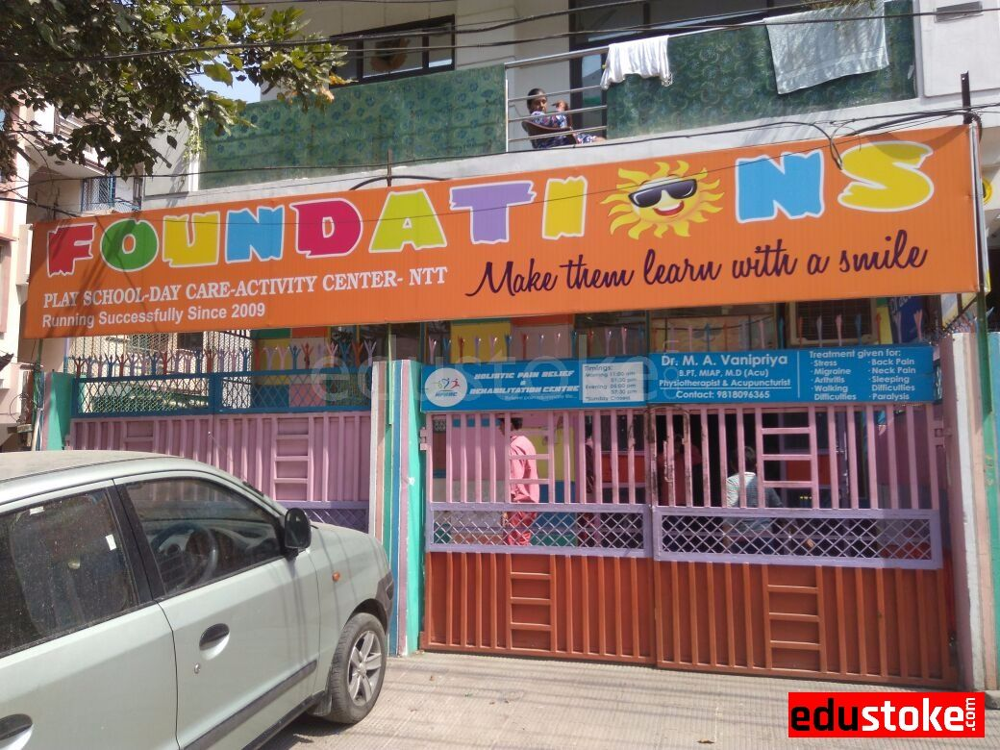
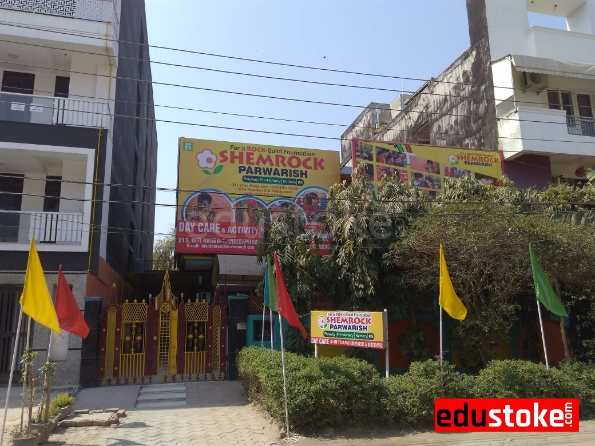
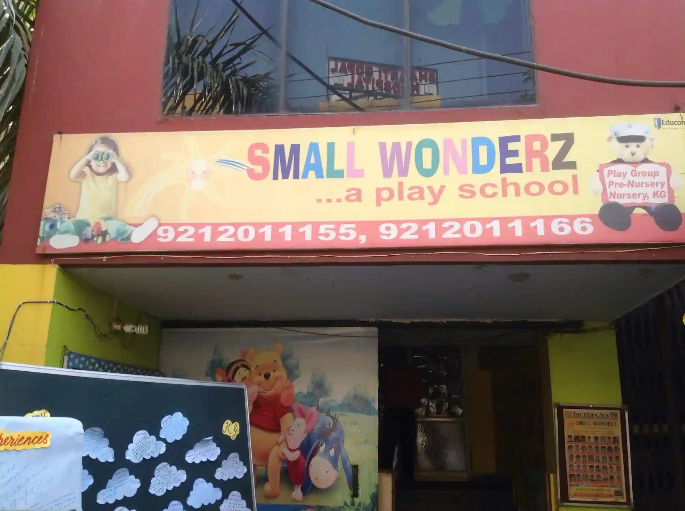
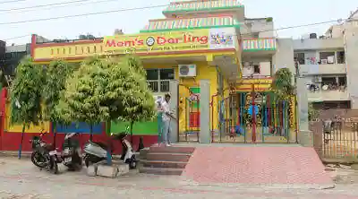

Best Play Schools in Indirapuram
It is well known that there is a dearth of good play schools in Indirapuram. And that is a major problem for young parents, which requires time and energy to solve. But you don’t need to worry, because as always, BestinIndirapuram has done all the hardwork for you. We visited these schools, took note of the infrastructure and the teaching staff, and had conversations with the parents of the current crop of students. All you need to do is sit back and relax, and read this list of the best play schools in Indirapuram; and contact the one you like the most. So here, in no particular order, are the top play schools in Indirapuram:
Foundations School - Play Pre School

Foundations School is the first playschool that we recommend to you. This preschool,
which is equipped with the most up-to-date infrastructure, is located
in Niti Khand. The instructors are knowledgeable and enthusiastic about their
work. Their goal is to make a difference in the world; one child at a
time. They are, without a doubt, a topic of discussion when it comes
to the best play schools in Indirapuram. Daily co-curricular
activities will assist your child in broadening her horizons, and the
atmosphere promotes multi-dimensional learning. All appeared legit and
awesome at the trial class that the BestinIndirapuram team supervised.
For more details, contact them or visit them here:
Address: 49, Niti Khand-I, Indirapuram, Ghaziabad, Uttar Pradesh 201014
Phone: 099115 41108
Kids Own Kingdom Play School & Day Care
This lovely play school, located in the Himalaya Tower, is an absolute delight for
your children. It's roomy, and the interior is absolutely stunning. It
also manages to send off a warm and relaxing vibe. Spending an hour
here is as relaxing and peaceful as seeing a sunset. With a wide
variety of activities for your kids, Kids Own Kingdom has quickly become one of our
favourites. The teachers are extremely knowledgeable, and each child
receives individual attention. Your children will unwind and play
while simultaneously learning about the world outside the glass doors.
Here are all the details you'll need to get in touch with them about
your concerns:
Address: 15,Himalaya Tower, Ahinsa Khand-2, Indirapuram, Ghaziabad, Uttar Pradesh 201014
Phone: 0120 412 9705
Shemrock Parwarish - Preschool & Daycare

If you ask any parent in town for a recommendation for the best play
schools in Indirapuram, you will almost certainly hear the name of the
reputed Shemrock Parwarish sooner or later. They are one of the city's largest play
schools, with many in-house teachers who are always able to answer
your child's questions. The support staff was also extremely courteous
and accommodating to our group, and the infrastructure was among the
best in Indirapuram. The owner also has a strong understanding of
child psychology and behaviour, and can tailor activities to your
child's specific learning habits. For more information about this
preschool, please contact them at:
Address: 792, Niti Khand I, Indirapuram, Ghaziabad, Uttar Pradesh 201014
Phone: 088020 04581
Small Wonderz Playschool & Daycare

If you want to send your child to a play school, Small Wonderz is one of the best
options in town. Or maybe even more so, if you want your child's
overall growth to be well-rounded. So go ahead and sign up for a trial
class at Small Wonderz, and trust us when we say you won't be disappointed. Their
existing crop of customers have nothing but positive things to say
about them. They didn't have a single concern. The staff is generous
and kind, allowing children to blossom to their full potential. The
teachers are also highly educated, and they ensure that the students
have a positive, learning-oriented attitude. This play school has
earned our stamp of approval! Their contact information is as follows:
Address: 88 Ahinsa Khand-II, Opp. Shanti Gopal Hospital, Indirapuram, Ghaziabad, Uttar Pradesh 201014
Phone: 092120 11166
Mom's Darling Play School

Mom's Darling Play School, can be described using many
different words – play school, preschool, day-care. We choose to
describe it as an “experience” (Yeah, we’re a bit pretentious). Right
from the moment you enter, you would be able to see why Mom's Darling Play School stands out
in a crowd of Indirapuram play schools. The activities and teaching
methods are probably the most unique in its category. And the teachers
are simply amazing. No matter how outlandish and bizarre your child’s
interests are, he will find scope to explore them at Mom's Darling Play School. We have no
qualms in saying that in a race for the title of the best play school
in Indirapuram, Mom's Darling is surely a frontrunner. Here is their contact
information:
Address: 371, Niti Khand, Indirapuram, Ghaziabad, Uttar Pradesh 201014
Phone: 0120 437 1907
So, that was it! Now you know what are the best play schools in Indirapuram. Liked it? Great! Check our other articles here. And if you think someone needs this information, don’t hesitate to share this page on WhatsApp, Facebook or even through word-of-mouth.